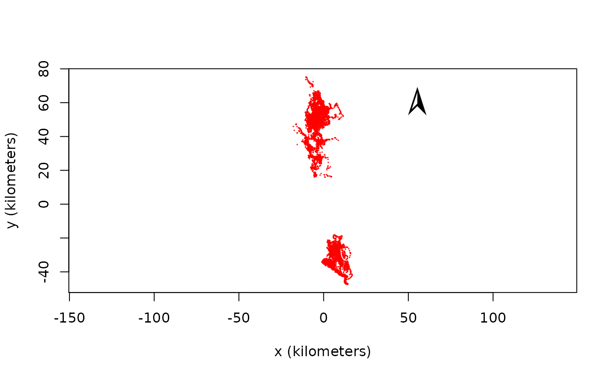
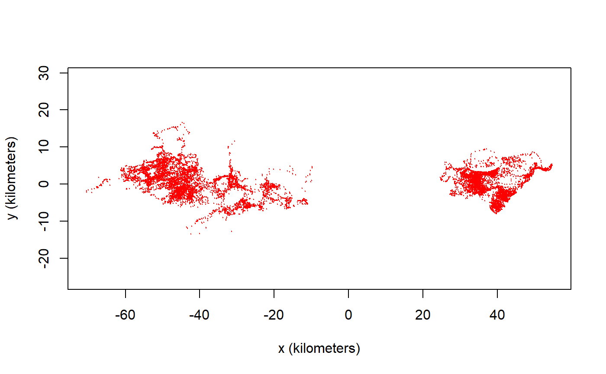

projection.RdFunctions to manipulate the coordinate reference system (CRS) of ctmm objects
# S4 method for telemetry
projection(x,asText=TRUE)
# S4 method for ctmm
projection(x,asText=TRUE)
# S4 method for UD
projection(x,asText=TRUE)
# S4 method for list
projection(x,asText=TRUE)
# S4 method for NULL
projection(x,asText=TRUE)
# S4 method for telemetry
projection(x) <- value
# S4 method for list
projection(x) <- value
# S3 method for telemetry
median(x,na.rm=FALSE,...)
compass(loc=NULL,cex=3,...)A telemetry, ctmm, or UD object.
If TRUE, the projection is returned as text. Otherwise a CRS object is returned.
Projection to apply. Can also be a data.frame of longitude-latitude foci.
Not used.
Optional two-dimensional coordinates (in meters) at which to draw a north-facing compass needle.
Relative size of compass.
projection(x) returns the projection information from ctmm object x, while projection(x) <- value applies the projection value to object x.
median(x) returns the ellipsoidal geometric median of a telemetry object.
compass(c(x,y)) plots a north-pointing compass needle at the coordinates \((x,y)\).
Plotting UTF-8 chracters in a PDF, like the compass needle, requires specifying a compatible font family. For example:
library(ctmm) data(buffalo) cairo_pdf(file="buffalo.pdf",family="DejaVu Sans") plot(buffalo[[1]]) compass() dev.off()
# Load package and data
library(ctmm)
data(buffalo)
# Apply a 1-point projection that preserves North==up
projection(buffalo) <- median(buffalo)
plot(buffalo)
#> DOP values missing. Assuming DOP=1.
#> DOP values missing. Assuming DOP=1.
#> DOP values missing. Assuming DOP=1.
#> DOP values missing. Assuming DOP=1.
#> DOP values missing. Assuming DOP=1.
#> DOP values missing. Assuming DOP=1.
compass()

# Apply a 2-point projection safer for elongated disributions
projection(buffalo) <- median(buffalo,k=2)
# This is the default projection for ctmm
plot(buffalo)
#> DOP values missing. Assuming DOP=1.
#> DOP values missing. Assuming DOP=1.
#> DOP values missing. Assuming DOP=1.
#> DOP values missing. Assuming DOP=1.
#> DOP values missing. Assuming DOP=1.
#> DOP values missing. Assuming DOP=1.
compass()
